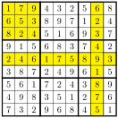
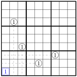

You will learn the basic strategies for placing numbers in the grid without guessing.
Opening Discussion3.1.
What is your experience with logic puzzles?
Sudoku is a classic pen-and-paper puzzle. (A pen-and-paper puzzle is a puzzle that can be given to you on paper and solved using just a pen, paper, and your brain.) If you look around, you will be able to find all sorts of puzzle books that contain them, as well as dozens of websites or apps that let you access gigantic libraries of puzzles.
The reason for studying Sudokus in this class is to help to develop deeper experiences with logical reasoning and formal deduction. Some people try to solve Sudokus through a combination of logic and guessing. But our goal will be to solve the puzzles without guessing. All of our "moves" must follow from pure logic. The benefit of this exercise isn’t that you learn how to solve Sudokus per se, but that you would start to develop experience with and patience for the logical part of your brain. Like any other muscle in your body, exercise can make it stronger.
Game3.2.Classic Sudoku.
Classic Sudoku is a logic puzzle where the goal is to place the digits 1-9 into a 9x9 grid so that each digit appears exactly once in every row, column, and 3x3 box formed by dividing the entire region into thirds in both the horizontal and vertical directions.
Figure3.3.Video instructions for Classic Sudoku
A valid Sudoku grid is one that satsifies the solve conditions of the puzzle. The diagram below shows a valid Classic Sudoku grid with a row, column, and box highlighted to help you verify that the condition that each digit appears once under each condition have been met.

A typical puzzle starts with only some of the squares filled with digits, and it is up to the player to fill in the remaining digits to get a valid Sudoku grid. A well-constructed puzzle will lead to the ability to complete the grid using logic and without guessing. Solving the puzzle by guessing somewhat defeats the purpose of the puzzle, which is the practice and experience of reasoning and pattern-recognition to reap the reward of a sense of accomplishment.
The goal of the next few sections is to introduce some of the logic that can be applied in an attempt to solve the puzzle. In this section, we will start by simply using the process of elimination to solve for specific entries. Here is a very simple application:
Based on the rules of the game, you should be able to easily identify the missing value in the middle box and in the row and column with 8 out of the 9 entries completed. The number in row 1 column 2 must be a 4, the number in middle must be a 7, and the number in row 7 column 9 must be a 6. In this case, all the other possibilities were eliminated by their existence in the row, column, or box.
This is an example of a naked single. This is when a value can be immediately determined by eliminating all other possible values by using the values in row, column, and box. Typically, naked singles are a little more challenging to discover because you have to consider multiple means of elimination. Consider the following grid:
It turns out that you can determine the digit at the top left by following the process of elimination. Based on the first row, it cannot be a 2, 3, or 4. And based on the first column, it cannot be a 5 or a 6. And based on the box, it can’t be a 7, 8, or 9. And so the only possibility is that it is a 1.
Now consider the following scenario:
Even though there is much less information in this example, we can still place the 1 in the bottom left box using the process of elimination. We can eliminate the possibility of a 1 in any row or column where a 1 already exists. This eliminates all but one of the positions in the box on the bottom left. The following image is a helpful visualization of this idea. The dashed lines are positions where the 1 in the box cannot be located.

In fact, whenever there are four of the same digit "looking at" one of the boxes, it must be the case that you can place the digit in that box. Two of the digits eliminate two of the rows, and the other two digits eliminate two of the columns, leaving exactly one row and one column where the digit can be placed.
In most situations, the elimination will occur through a combination of row, column, and box values. Sometimes, certain positions will be blocked by other numbers. You will also typically not know which value could be placed before thinking through the logic of the puzzle. These puzzles will require some practice and patience, but over time you will begin to see the values more quickly.
Subsection3.1.1Naming Conventions
In order to communicate about the different positions in a Sudoku grid, there must be an agreed-upon convention. Fortunately, the naming convention is intuitive enough that most people understand it without explanation. But for the sake of completeness, we’re going to be explicit about this.
The rows are numbered from 1 to 9 from top-to-bottom, and the columns are numbered from 1 to 9 from left-to-right. The boxes are numbered from 1 to 9 going left-to-right and top-to-bottom (like reading a book). Here is a diagram that captures all of this information:
The positions of specific squares in the grid is usually given in row-column format, such as row 3, column 5. The shorthand notation for that would be r3c5.
There is a parallel between positions in the Sudoku grid and points on a plane. You might remember that every point in the plane can be described using two numbers, written as \((x,y)\text{.}\) It would be possible to reduce the row-column notation to just two numbers (so r3c5 becomes \((3,5)\) or maybe just 35), but that comes at the expense of clarity. It is rare that notation is introduced simply for the purpose of having notation. It’s usually done with the goal of helping to communicate ideas more clearly (which is also one of the reasons points on the plane are described the way they are).